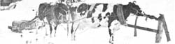
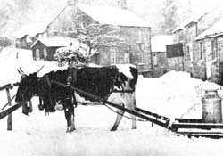

Before you spend upwards of $1,200 for a team of oxen - or several times that for a tractor - let Robin Thistle of South Hazelton, British Columbia tell you about . . .
As I recently re-read John R. Scarlett's suggestions for using oxen on the small farm (see "The Organic Experimental Engine", MOTHER NO. 21, page 44), it occurred to me that my own experiences in this area might be useful. Useful, at any rate, to those of MOTHER's readers who're interested in running a few acres as naturally and economically as possible.
Anyone who's ever owned draft animals knows that there's one big drawback to keeping horses, mules, oxen, etc.: namely, the beasts tie up a considerable quantity of valuable land, while producing only a modest amount of power and manure. Now, on a 100-acre farm where a great deal of draft power is required, this expenditure may be justified ... but on a tiny farmstead where every square foot of land is needed, it's just not practical to devote precious acreage to the upkeep of draft animals.
There is an "easy way out" of this dilemma, of course: buy a tractor (and add to the world's problems by fueling it with petroleum products). That's not a very satisfactory solution, however, economically OR ecologically.
Another very real alternative - although seldom thought of by most people - does exist, however, and to introduce it I'd like to step back to the mid-1960's and recount a bit of personal history.
A decade ago, I made my living as a small milk producer in the hills and dales of North Yorkshire, England. My "spread" totaled 35 acres, most of them steep and craggy. Since I've never personally liked tractors (I despise them, in fact), all the everyday work around that farm was done with the aid of Peggy, my Clydesdale mare ... whose main duty was to haul 30 gallons of milk to market every day across three-quarters of a mile of steep, rough road. (All heavier farmwork - baling and such - was left to local contractors.)
One early Christmas morning, as the frosty sky was beginning to brighten in the east, I set off with Peggy up the steep road to town with two churns (each containing 15 gallons of milk) secured to my flatcart. The last steep stretch of the country road I traveled twisted between high banks and hedges before joining a paved thoroughfare into the village. We were halfway up this hazardous section in the morning's dim light before I realized that - ahead of us - water had run out from the side ditch and frozen across our path. Rather than try to back down the hill as I should have, though, I decided to risk going the rest of the way up.
What a mistake that was! Peggy missed her footing on the ice and fell, breaking one of the cart's shafts. Luckily, I managed to free the horse from the wreckage and carry the milk cans - one at a time - up the last few yards of the track on my back. My beloved mare, however, was now lame ... and I was faced with the prospect of having to pack 100-pound cans all the way to town on my back every morning in order to get the milk to market.
At this point, I didn't know what I was going to do. It so happened, though, that I'd recently read a farming textbook of the early 1830's which contained a treatise on draft animals. In this treatise, oxen were given equal billing with horses, and the author of the piece even went so far as to point out the usefulness of dairy cattle (if they're well on in their lactation) as work animals. Moreover, the author maintained that unless a cow was already giving a great deal of milk, the exercise obtained from light work was likely to increase - not decrease - her production.
Well, no sooner had I recalled this treatise than I hit upon-and set out to implement-the idea of harnessing one of my own cows to do the work that Peggy had been doing.
I selected Miranda-a middle-aged Ayrshire-as the most suitable subject for my experiment since, in addition to being quiet and halter-broken, she was neither giving a great deal of milk nor was she too heavily in calf.
"Poor Miranda," I thought. "This is going to be difficult for both of us." (I didn't expect breaking a cow to harness to be easy ... probably because I'd been brainwashed into believing that horses are draft animals, while cattle are for milk and meat, and only backward people work oxen anyway).
I couldn't have been more wrong! Compared to breaking a horse - and I've trained several for draft work in my time - harnessing Miranda was a cinch. And she has since proven no exception to the rule: All my subsequent experience has only confirmed my belief that if a cow has been thoroughly halter-broken, leads well, and is quiet and friendly ... she should take to draft work like a pig to mud.
Here's how I went about training that first cow to work: I began by haltering Miranda and slipping an open-necked horse collar down onto her neck. (If you don't have an open-necked collar, you can slit a closed one open at the top ... the hames will hold it together.) An open collar is necessary because even if she doesn't have horns, a cow's head is too broad to fit through a regular horse collar.
I put the collar on upside down (that is, in what would be an upside-down position for a horse) for the simple reason that a cow's neck, looked at from a horseman's point of
view, is upside down: thick at the top and thin at the bottom. It's true that with the collar inverted, the trace hooks are at a much higher position than they would be on a horse, but this is all right. The point of draft on a cow should be higher than for a horse.
A pair of trace chains and a backband completed Miranda's gear.
At this stage, I led the old gal around the yard to let her become accustomed to the collar and to the swinging of the chains against her sides. She seemed completely unbothered by her new outfit.
Next, I brought out an old iron bed and fastened a length of heavy cord to it. I made sure the rope was long, so that when I walked beside Miranda and she dragged the bed behind her, it wouldn't catch her heels. The purpose of this exercise was to see if Miranda would be frightened when a strange object began following her around. She wasn't. (Nor was she upset when I turned her about, and caused the cord to tighten against her hind legs.)
Now there was only one question left to answer: Would Miranda pull a load? To find out, I took from the cart house a lightweight sled I'd made the winter before, attached a small singletree to it, brought Miranda around, hooked her traces to the singletree just as if she were an experienced workhorse ... and urged her forward. The chains tightened, and lo! the sled began to move. Good ole Miranda stepped out as though she'd been working all her life!
The next morning, I yoked my new "draft" animal to the sled once again, drew up at the dairy door long enough to load up and tie down the usual two cans of milk, and drove off. When I gave Miranda her head, she not only laid into the collar on steep hills without urging, but picked her way around icy spots in the road without a slip.
I need hardly say that the village was agog when I drew up at the milkstand that day. As far as I know, there were-at the time-no other working cattle in the whole of the British Isles, apart from a single team of Herefords in the south. To many of the farmers on hand, my appearance with a cowdrawn sled brought back memories from 50 years or more before, when cattle were more widely worked. I was treated to tales about the day the bull dragged a cartload of turnips through a hedge, and told about how donkeys and bullocks could once be seen working side by side.
Later, when snowy weather arrived, I was faced with the problem of how to keep my chain-drawn sled from running into Miranda's heels as we went downhill. I learned of several possible ways to do this. One is to sling a skid chain around the sled's runners to increase its gliding friction. Another method - which I used at first - is to walk behind the load and hold the light sled back with a rope. (This was a less-than-ideal procedure, as I could easily have lost my footing and let go of the line.)
The best technique - and the one I eventually settled on - involved putting a pair of shafts on the sled. As luck would have it, I had a pair of small shafts from a pony lorry which I was able to fit to the sled in such a way that the bars could swing up at any angle. Leaving her inverted collar on, I outfitted Miranda with a light float harness that fit her reasonably well, and then hitched the sled's new shafts to the harness. With this rig - and with the aid of breeching (a leather strap around her hindquarters )- Miranda was in complete control of the sled even on the steepest downgrade. (The constriction of the shafts bothered her no more than had the sled on the first day.)
Eventually, I broke other members of the herd with almost equal ease, and - to lighten the beasts' workload - I even began to yoke my cows in tandem (one behind the other). The rearmost animal would be in between the shafts to steady the load when we went downhill, while the front cow - whose traces were hooked onto loops at the tips of the shafts - gave extra pulling power on the upgrades.
I've never harnessed two cows abreast, as I would two horses, for the simple reason that the animals might - especially if they have horns - injure each other. Naturally, though, the way to overcome this problem would be to use a yoke, but that's a piece of equipment I have no experience with. (I've always had sufficient horse gear around and found that it served my purposes admirably.)
Ever since learning how to harness a cow, I've never (if I could avoid it) used a heavy horse to pull a load in icy or snowy conditions. For Miranda - and others after her - taught me that a cow is, in many ways, much more nimble and safe than a farm horse (or even most ponies). Left to themselves, cattle will pick their own way over a treacherous stretch of road with ease ... and, if they should fall, they don't come crashing down with the momentum of a 2,000-pound shire horse.
From a single animal, then, it's possible to have not only milk, and a calf to raise for meat (if you're so inclined) ... but draft power for various jobs around the farm: light plowing, harrowing, carting, sledding, log skidding, etc. Most of the equipment you'll need for hitching up your cow - including some of the harness - can be homemade (mine was), and you can train the beast yourself.
So, before you rush out and spend a couple thousand dollars for a team of oxen - or worse, a tractor-at least give a passing thought to the triple-purpose cow. Treat her well, don't ask her to pull more than she can handle ... and she'll serve you faithfully with milk, meat, and a helping hoof.
|
 |
 |
|